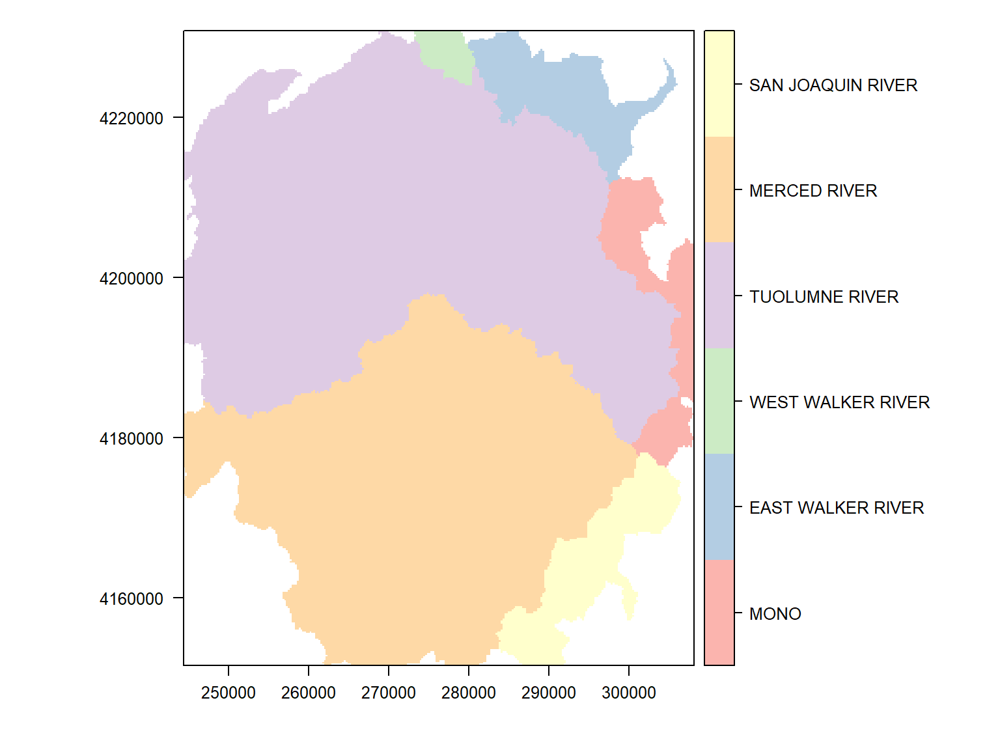

Spatial Data Analysis with R
BayGeo, Spring 2022
Raster Manipulations 
Raster Manipulations
Raster* propertiesA number of functions are available to view the properties of a raster object. Most of these are read-only.
| Property | Function(s) |
|---|---|
| image dimensions | nrow(), ncol(), ncell(), dim() |
| resolution (pixel size) | res() |
| number of layers | nlayers(), nbands() |
| layer names | names() |
| coordinate reference system | proj4string(), projection() |
| extent | extent() |
| in memory or not | inMemory() |
| source file | filename() |
| has values | hasValues() |
| cell values data type | dataType() |
| has a raster attribute table | is.factor() |
Try some of the above functions on the Yosemite DEM. (You can use the following code to import and clip the DEM.)
library(sf)
library(raster)
yose_bnd_ll <- sf::st_read(dsn="./data", layer="yose_boundary")
srtm_fn <- "./data/srtm_13_05.tif"
srtm_13_05_rst <- raster(srtm_fn)
yose_dem_ll <- raster::crop(srtm_13_05_rst, yose_bnd_ll)## Reading layer `yose_boundary' from data source
## `D:\Workshops\R-Spatial\rspatial_mod\outputs\rspatial_bgs22\docs\notebooks\data' using driver `ESRI Shapefile'
## Simple feature collection with 1 feature and 11 fields
## Geometry type: POLYGON
## Dimension: XY
## Bounding box: xmin: -119.8864 ymin: 37.4947 xmax: -119.1964 ymax: 38.18515
## Geodetic CRS: North_American_Datum_1983Common raster manipulations include:
| Task | Function(s) |
|---|---|
| visualize | image(), plot() |
| (re)project | projectRaster() |
| crop | crop() |
| mask | mask() |
| resample (i.e., change the pixel size) | aggregate(), resample() |
| adjust pixel values (stretch, reclassify, etc.) | getValues(), rst[], setValues() |
| stack | stack() |
| mosaic | mosaic() |
| vector –> raster | rasterize() |
| export to disk | writeRaster(), writeGDAL() |
In future a section, we’ll look at some raster analytical functions such as:
| Task | Function(s) |
|---|---|
| descriptive cell statistics | cellStats() |
| binary mask | myrast[] |
| raster algebra (local operations) | * + - / |
| focal (neighborhood) operations | focal() |
| zonal stats | zonal() |
| distance surface | distance() |
| spatial join (enrichment) | extract() |
| spatial interpolation | |
| classify pixels | |
| time series analysis |
Like sf objects, projection info in rasters is saved. You can view (or assign) a CRS object to a raster object using proj4string().
Unlike sf::st_crs() which can take a EPSG code, CRS() requires a text argument. If you know the EPSG code you can generate the CRS object as follows:
CRS("+init=epsg:4326")
Projecting rasters is a little more complicated than vector features because of the additional spatial structure implicit in the grid. If you blindly apply a projection equation to cell coordinates, you’ll very likely wind up with non-square cells. That’s a problem if your goal is to combine the projected raster with other rastesrs for analysis or visualization, because the cells may not align properly.
To help with this, the projectRaster() function has some additional arguments:
projectRaster(from, to, res, crs, method, filename="")
If you’re trying to project a raster to match another one, you can simply enter the existing one as the **to** argument and R will match the cell size and extent:
projectRaster(from, to, method)
Alternately you can also manually specify the CRS and the resolution with **res**:
projectRaster(from, res, crs, method, filename="")
method - determines how the projected cell values will be computed. Very important to pay attention:
categorical rasters - pixel values are merely integrates that correspond to a category, let **method='ngb'** (nearest neighbor) so the output cell values remain integers.
continous rasters - use bilinear to interpolate new values.
Project the Yosemite DEM to UTM:
utm11n_nad83_epsg <- 26911
utm11n_nad83_proj4 <- "+init=epsg:26911"
## Project the clipped DEM to UTM
yose_dem_utm <- projectRaster(yose_dem_ll, crs=CRS(utm11n_nad83_proj4), res=90, method="bilinear")
yose_dem_utm## class : RasterLayer
## dimensions : 880, 708, 623040 (nrow, ncol, ncell)
## resolution : 90, 90 (x, y)
## extent : 244387.5, 308107.5, 4151576, 4230776 (xmin, xmax, ymin, ymax)
## crs : +proj=utm +zone=11 +datum=NAD83 +units=m +no_defs
## source : memory
## names : srtm_13_05
## values : 440.8224, 3958.44 (min, max)The extent of a Raster is simply the rectangular area it reflects, like a bounding box. Extent objects can saved on their own and used for cropping, creating new raster objects, etc. You can increase an Extent object on all sides using raster::extend(), and even project it with raster::projectExtent(). The former offers an easy way to enlarge the area is cropped to have a little buffer on all sides.
## Project the SRTM tile
srtm_13_05_utm <- projectRaster(srtm_13_05_rst, crs=CRS("+init=epsg:26911"), res=90, method="bilinear")
## Compute an extent that goes 1 km beyond the boundaries of the park
yose_big_ext <- extend(extent(yose_dem_utm), 1000)
## Crop the projected SRTM tile
yose_dem_ext <- raster::crop(srtm_13_05_utm, yose_big_ext)
## Plot to see if it worked
plot(yose_dem_ext)
plot(yose_bnd_utm %>% st_geometry(), col=NA, border="black", lwd=2, add=TRUE)
Masking is similar to cropping, but rather than chopping off rows and columns, pixels that fall outside the study area are simply set to NA. This allows you to perform raster analyses for irregular areas, because most statistical functions ignore NA values, and R will generally make NA pixels transparent when plotting.
To mask a raster, use raster::mask(*rst*, *mask*) where rst is your raster and mask is an another Raster or Spatial object (e.g., polygon).
Mask the Yosemite DEM by the park boundary:
RasterStack and RasterBrick objects store multi-layer rasters. When you import a multi-layer raster from disk using the raster::brick() function, you get a RasterBrick object. Sometimes your source data come from different files. In this case, feed the filenames into the raster::stack() function.
Most functions like cropping and masking will work on all layers combined.
You can grab a single layer the same way you would a list, such as big_stack[[1]] or big_stack$*layer_name*. To pull out multiple layers, use raster::subset().
Add and delete layers with raster::addLayer() and raster::dropLayer().
Import the mission_tempXX.tif files in the data folder as a RasterStack.
See also: Remote Sensing Image Analysis by Robert Hijmans
You may want to change the pixel size to reduce the amount of data and therefore computation time required. Another common case is where you need to match the resolution of two rasters so you can do pixel-by-pixel computations.
The raster package has two functions to change pixel size:
aggregate(x, fact=2, fun=mean, ...)
resample(x, y, method="bilinear", ...)
Use aggregate() when you want to increase pixel size by a numeric factor, for example by 2 (twice as big). The fun agrument allows you to specify the function uses to summarize values (e.g., take the mean). resample() will match the pixel size of another raster. Remeber with discrete or categorical data, use method='ngb' so the cell values in the output will remain integers.
Let’s reduce the resolution of the DEM by a factor of 10. Note the discernably larger pixel sizes.
## Resample the DEM
yose_dem1k_msk <- raster::aggregate(yose_dem_msk, fact=10)
## View the new resolution, num rows and columns
yose_dem1k_msk
## Plot
plot(yose_dem1k_msk)
plot(yose_bnd_utm %>% st_geometry(), col=NA, border="black", lwd=2, add=TRUE)## class : RasterLayer
## dimensions : 88, 71, 6248 (nrow, ncol, ncell)
## resolution : 900, 900 (x, y)
## extent : 244387.5, 308287.5, 4151576, 4230776 (xmin, xmax, ymin, ymax)
## crs : +proj=utm +zone=11 +datum=NAD83 +units=m +no_defs
## source : memory
## names : srtm_13_05
## values : 795.2238, 3798.272 (min, max)A slope surface is a raster whose cell values represent the slope of the terrain, while an aspect raster records the direction of the compass is uphill. Both of these can be created from a DEM with the raster package’s terrain() function.
You can feed slope and aspect rasters into the hillShade() function to generate a raster the simulates shading.
## Compute the slope, aspect, and hillshade
yose_slope <- raster::terrain(yose_dem_msk, opt="slope")
yose_aspect <- raster::terrain(yose_dem_msk, opt="aspect")
yose_hillshade <- raster::hillShade(yose_slope, yose_aspect, 40, 270)
## Plot results
plot(yose_hillshade, col=grey(0:100/100), legend=FALSE)
plot(yose_bnd_utm %>% st_geometry(), col=NA, border="black", lwd=2, add=TRUE)What do the two numeric arguments in the hillShade() function do?
yose_hillshade <- hillShade(yose_slope, yose_aspect, 40, 270)
[Answer]
Determine the angle and direction of the simulated sunlight.
Occassionally you have to convert vector features to a raster format for an analysis. Points, lines and polygons can all be converted to raster with the rasterize() function.
rasterize(sp_object, rast, field, fun=‘last’, background=NA, mask=FALSE)
Details you have to think about are what cell size to use, how the values of the cells should be computed, and what to do when two or more features overlap or fall in the same cell.
Typically, you use another raster (i.e., the one you’re trying to match) as the ‘template’ for the rasterized features, passed as rast (must have the same CRS).
The field argument has a number of options for the cell output values, including a constant value, or the name of a column in the vector attribute table.
Rasterize the Yosemite watersheds, using the DEM as the raster template.
First load the watersheds, and project them to match the raster.
## Import watersheds from a geopackage
gpkg_watershd_fn <- "./data/yose_watersheds.gpkg"
yose_watersheds_utm <- sf::st_read(gpkg_watershd_fn, layer="calw221") %>%
st_transform(utm11n_nad83_epsg)
plot(yose_watersheds_utm %>% st_geometry(), axes=TRUE)
## Get the bigger watersheds by group on the HU column
yose_hu_utm <- yose_watersheds_utm %>%
group_by(HU) %>%
summarise(HUNAME = first(HUNAME),
NUM_WATERSHEDS = n())
plot(yose_hu_utm %>% st_geometry(), axes=TRUE)## Reading layer `calw221' from data source
## `D:\Workshops\R-Spatial\rspatial_mod\outputs\rspatial_bgs22\docs\notebooks\data\yose_watersheds.gpkg'
## using driver `GPKG'
## Simple feature collection with 127 features and 12 fields
## Geometry type: POLYGON
## Dimension: XY
## Bounding box: xmin: 1383.82 ymin: -61442.93 xmax: 81596.71 ymax: 26405.66
## Projected CRS: NAD83 / California AlbersNext, we rasterize!
## Rasterize the watershed boundaries, using the DEM as the template.
## By omitting the field argument, the cell values will be the index (row number) of the overlapping polygon
yose_hu_rst <- raster::rasterize(yose_hu_utm, yose_dem_msk)
## Plot
colors_qual_paired <- RColorBrewer::brewer.pal(nrow(yose_hu_utm), "Paired")
plot(yose_hu_rst, col=colors_qual_paired)Rasterizing is computationally intensive and can take a while depending on the complexity of the vector features and the resolution of the raster template.
The distance() function will generate a new raster whose cell values represent the distance to the nearest feature.
To create a distance surface that shows the distance to the nearest trail, we:
Rasterize the trails, resulting in a raster where cells that have a trail have a value of 1, and everything else is NA.
Feed the rasterized trails into distance() .
First, import the trails:
Next we rasterize the trails, using the DEM as a template.
## Rasterize the trails, using the DEM as a template for the output raster. Cells that contain
## a trail will be '1', and everything else will be NA.
## Note: this can take > 5 minutes. If you don't want to wait run instead:
## yose_trails_rst <- raster("./data/~yose_trails.tif")
yose_trails_rst <- raster::rasterize(yose_trails, yose_dem_utm, field = 1)
## Plot it
plot(yose_trails_rst, col = "red", legend = FALSE, main = "Yosemite Trails Rasterized")## value count
## [1,] 1 20162
## [2,] NA 602878Finally we compute the distance surface:
## Compute the distance surface. Note this can take up to a minute.
yose_dist2trails_rst <- raster::distance(yose_trails_rst)
## Plot
plot(yose_dist2trails_rst)
plot(yose_trails %>% st_geometry(), col="red", add=TRUE)
plot(yose_bnd_utm %>% st_geometry(), col=NA, border="black", lwd=2, add=TRUE)See the gdistance package for more advanced distances.
We just created a categorical raster where the cell values are integers that refer to a category. We can see the frequency of cell values as a matrix with freq().
## value count
## [1,] 1 20686
## [2,] 2 23325
## [3,] 3 4342
## [4,] 4 236791
## [5,] 5 191674
## [6,] 6 25691
## [7,] NA 120531To save the category labels as part of our raster, it needs a “Raster Attribute Table” (RAT). We can see if our raster has one by entering it at the console:
## class : RasterLayer
## dimensions : 880, 708, 623040 (nrow, ncol, ncell)
## resolution : 90, 90 (x, y)
## extent : 244387.5, 308107.5, 4151576, 4230776 (xmin, xmax, ymin, ymax)
## crs : +proj=utm +zone=11 +datum=NAD83 +units=m +no_defs
## source : memory
## names : layer
## values : 1, 6 (min, max)
## attributes :
## ID HU HUNAME NUM_WATERSHEDS
## from: 1 1 MONO 7
## to : 6 40 SAN JOAQUIN RIVER 6If needed, the ratify() function will return a categorical (factor) raster with a bare bones attribute that we can then add columns to.
We can grab the RAT with levels().
levels() when applied to a categorical raster returns a list of data frames (one for each layer).
## ID HU HUNAME NUM_WATERSHEDS
## 1 1 1 MONO 7
## 2 2 30 EAST WALKER RIVER 5
## 3 3 31 WEST WALKER RIVER 2
## 4 4 36 TUOLUMNE RIVER 60
## 5 5 37 MERCED RIVER 47
## 6 6 40 SAN JOAQUIN RIVER 6To plot the raster with the watershed names in the legend, we have to turn to the rasterVis package which has the levelplot() function. We also need to generate a set of random colors, and tell it which column from the attriute table to show in the legend.
library(rasterVis)
colors_qual_pastel1 <- RColorBrewer::brewer.pal(nrow(levels(yose_hu_rst)[[1]]), "Pastel1")
## Make the plot with levelplot
rasterVis::levelplot(yose_hu_rst, colorkey=list(height=1), col.regions=colors_qual_pastel1, att="HUNAME", xlab="", ylab="")
We’ve already seen you can visualize the distribution of cell values with the hist() function.
There are couple of ways to get cell values so you can analyze them or feed them into a statistical model.
**getValues()** - returns a copy of all pixel values as a vector (useful for global operations)
**getValuesBlock()** - returns a copy of a rectangular block of cell values
Other common manipulations of raster data leave the spatial structure intact, but modify the cell values. For example you may want to ‘clip’ the values so that all values below a certain threshhold are changed to ‘0’. Another example would be a linear stretch for better visualization.
To both read and write (edit) cell values, you can use square brackets. Like data frames, you can add an expression for the rows and columns to work with.
**myrast[]**, **myrast[_rows_, _cols_]**
By default, the myrast[] notation will return cell values as a numeric vector. If you want to return select columns and rows as a Raster object, add drop=FALSE.
## class : RasterLayer
## dimensions : 2, 2, 4 (nrow, ncol, ncell)
## resolution : 90, 90 (x, y)
## extent : 284797.5, 284977.5, 4185686, 4185866 (xmin, xmax, ymin, ymax)
## crs : +proj=utm +zone=11 +datum=NAD83 +units=m +no_defs
## source : memory
## names : layer
## values : 2978.858, 3000.158 (min, max)Another function you can use to change cell values is **setValues()**. Note however that **setValues()** requires you to pass a numeric vector for all cells, whereas square bracket notation (e.g, myrast[expr]) allow you to assign new values to only those cells that meet a condition in expr.
In the following example, we identify pixel values that are below a threshhold, and then set them to 0.
## Make copy of the DEM
yose_dem_msk_copy <- yose_dem_msk
## Get the values (not a copy)
dem_vals <- getValues(yose_dem_msk_copy)
## Get a logical vectors of the values less than 1500 (meters)
small_vals <- (dem_vals < 1500) ## Create a Boolean vector
table(small_vals)
## Change the value of those smallish values to 0
yose_dem_msk_copy[small_vals] <- 0## small_vals
## FALSE TRUE
## 350387 22409Compare results:
par(mfrow=c(1,2))
x <- hist(yose_dem_msk, col="grey50", main="\nOriginal")
hist(yose_dem_msk_copy, col="grey50", main="\nSmall Vals Zeroed")How many cells got zeroed out? How much area do they represent?
[Solution]
The number of cells that got zeroed out is recorded in small_vals. We can multiple that times are area of each pixel to get the total area.
## Number of cells that have low elevation
sum(small_vals, na.rm = TRUE)
## Area of one cell
prod(res(yose_dem_msk))
## Total area of low elevatino areas
prod(res(yose_dem_msk)) * sum(small_vals, na.rm = TRUE)## [1] 22409
## [1] 8100
## [1] 181512900What happens if you change the values of the small cells to NA?
[Answer]
They’ll appear transparent when plotted.
Functions that return a copy of a raster with modified cell values are calc() and reclassify().
Reclassifying changes groups of cell values to other values all at once. For example, you could change all cell values between 1 and 10 to become 1, all values between 11 and 15 become 2, etc. We can do this with:
**reclassify(rst, rcl)**
The key to reclassify() is the rcl argument, which is a 3-column matrix with columns for the lower bound, upper bound, and new value for each group.
Earlier we computed the slope of the Yosemite DEM. Let’s look at that distribution:
## Plot the distribution of slope values
hist(yose_slope, col="gray50", breaks=20)
## Slope is measured in RADIANS. To convert to degrees we multiply times 180 / pi
hist(yose_slope * 180 / pi, col="gray50", breaks=20)Step 1. Create the reclassification matrix. The first and second columns should define the range of input values, and the third column should be the new value in the output. Rows should be mutually exclusive.
We’ll bin the slopes as follows:
low: 0 to 15 degrees
medium: 15 - 30
high: 30+
## Create a reclassification matrix using degrees (more intuitive)
rcl_mat_deg <- matrix(c(0,15,1,15,30,2,30,90,3), ncol=3, byrow=TRUE)
rcl_mat_deg
## Convert the first two columns from degrees to radians
rcl_mat_rad <- rcl_mat_deg
rcl_mat_rad[ ,1] <- rcl_mat_rad[ ,1] * pi / 180
rcl_mat_rad[ ,2] <- rcl_mat_rad[ ,2] * pi / 180
rcl_mat_rad## [,1] [,2] [,3]
## [1,] 0 15 1
## [2,] 15 30 2
## [3,] 30 90 3
## [,1] [,2] [,3]
## [1,] 0.0000000 0.2617994 1
## [2,] 0.2617994 0.5235988 2
## [3,] 0.5235988 1.5707963 3Step 2. Apply the reclassifcation matrix:
## Apply the reclassification
yose_slope_lmh <- raster::reclassify(yose_slope, rcl_mat_rad)
yose_slope_lmh
freq(yose_slope_lmh)## class : RasterLayer
## dimensions : 880, 708, 623040 (nrow, ncol, ncell)
## resolution : 90, 90 (x, y)
## extent : 244387.5, 308107.5, 4151576, 4230776 (xmin, xmax, ymin, ymax)
## crs : +proj=utm +zone=11 +datum=NAD83 +units=m +no_defs
## source : memory
## names : slope
## values : 0, 3 (min, max)
##
## value count
## [1,] 0 157
## [2,] 1 212862
## [3,] 2 119441
## [4,] 3 36464
## [5,] NA 254116reclassify() has optional argument(s) to fine-tune whether the lower and upper bounds are open or closed. See the help page for details.
Step 3. View results:
Use reclassify() to reclassify aspect into facing north, east, south, and west.
Remotely sensed raster data often have pixels around the edges that are ‘missing’ values because the sensor didn’t record that area. Other times, an analyst may chose to manually ‘erase’ pixel values outside a non-rectangular study areas so those pixels are omitted from analyses.
There are a variety of conventions for flagging ‘missing’ data depending on the file format. Sometimes they are simply recorded as ‘0’, but that doesn’t always work because 0 can also mean no reflectance. Other common values for NoData are -9999 or -3.4e+38 for floating point rasters.
TIF files can have a tag in the header which records the value used for ‘NoData’. You can see this with the GDALinfo() function.
View the missing data value for the landsat image:
## View the digital number that represents missing data in the Landsat 8 image
rgdal::GDALinfo("./data/yose_l8_20180822_b2345.tif")## rows 2555
## columns 2014
## bands 4
## lower left origin.x 246315
## lower left origin.y 4152885
## res.x 30
## res.y 30
## ysign -1
## oblique.x 0
## oblique.y 0
## driver GTiff
## projection +proj=utm +zone=11 +datum=WGS84 +units=m +no_defs
## file ./data/yose_l8_20180822_b2345.tif
## apparent band summary:
## GDType hasNoDataValue NoDataValue blockSize1 blockSize2
## 1 Int16 TRUE -32768 1 2014
## 2 Int16 TRUE -32768 1 2014
## 3 Int16 TRUE -32768 1 2014
## 4 Int16 TRUE -32768 1 2014
## apparent band statistics:
## Bmin Bmax Bmean Bsd
## 1 7208 29840 9706.296 1516.573
## 2 6100 30960 9498.375 1919.447
## 3 5357 32595 9637.470 2457.824
## 4 4330 30481 14146.935 2610.648
## Metadata:
## AREA_OR_POINT=AreaThe no data value for this floating point image is -32768.
R uses **NA** to signify missing data, which most statistical functions ignore and most plotting functions make transparent. raster() converts the missing data values in a file to NA when importing.
The raster package has its own export function, writeRaster(), that can export a raster to a number of common file formats including GeoTIFF, ENVI, IDRISI, netCDF, ERDAS, and others. You can of course also export using writeGDAL() from the rgdal package.
Save the masked DEM to to disk as a TIF file:
If the filename has a known extension, you don’t have to specify the format.
To (over)write cell values to an existing file on disk (i.e., without having to save the whole thing), use writeValues().
Today we saw how to:
Additional Resources